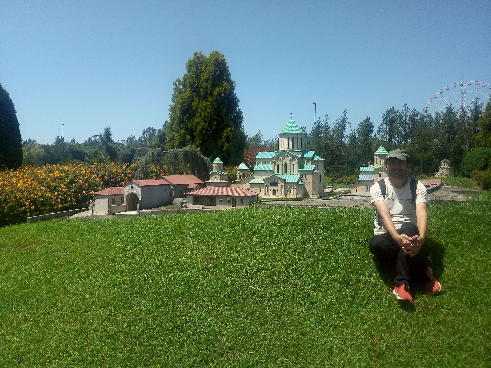

Shekvetili
Guria · Georgia
Located on Georgia's Black Sea coast, Shekvetili is a seaside destination known for its relaxed atmosphere, natural surroundings, and distinctive attractions. Beyond its coastline, the area offers interesting places to explore, including Miniature Park, Musicians Park, and Shekvetili Dendrological Park. Miniature Park provides an opportunity to discover some of Georgia's most recognizable landmarks in one place, while Musicians Park combines outdoor scenery with artistic sculptures dedicated to famous musicians. The Dendrological Park, with its impressive collection of trees and landscaped green spaces, offers a different experience for visitors who enjoy nature and peaceful surroundings. Together, these attractions reveal the variety of experiences that make Shekvetili an interesting destination along the Black Sea. Its combination of coastal scenery, cultural attractions, and natural beauty gives the area a distinctive character. These pages bring together my personal photographs and travel memories from Shekvetili, capturing different aspects of this special part of Georgia.

Miniature Park
Discover miniature models of Georgia's famous landmarks and architectural attractions.
Explore Photos ↗
Musicians Park
Explore the outdoor park featuring sculptures dedicated to famous musicians.
Explore Photos ↗
Shekvetili Dendrological Park
Discover the botanical landscapes, impressive trees, and natural beauty of the dendrological park.
Explore Photos ↗